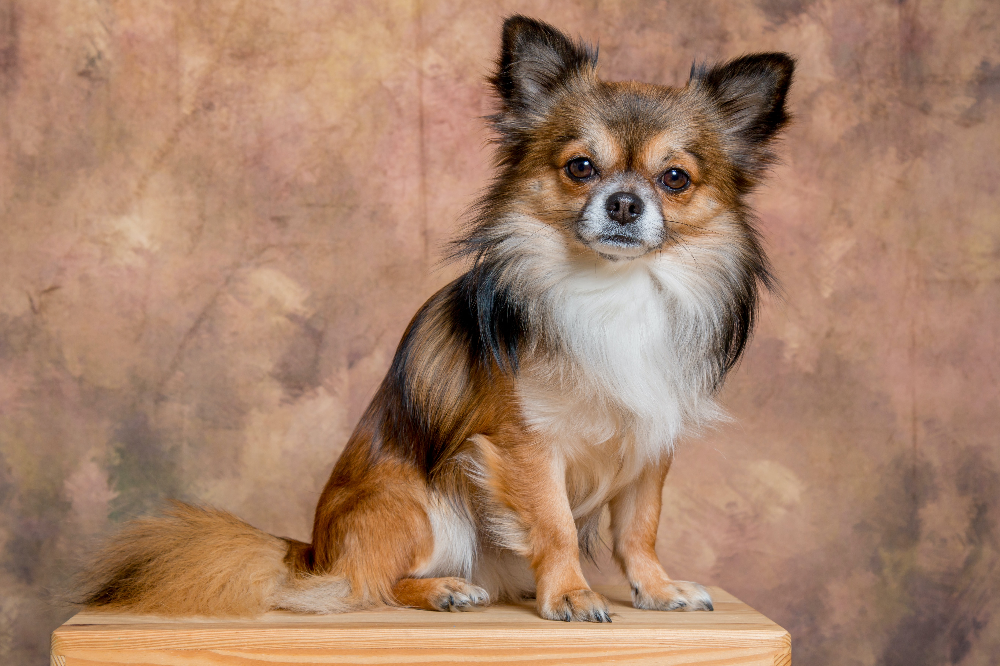

Šķirnes nosaukums tiek tulkots no franču kā “tauriņš”. Līdzība ar šiem kukaiņiem ir viņu elegantās austiņas, kas rotātas ar mīksto, garo vilnu. “Tauriņu” vecvecāki, kontinentālās spanieli, izmantoja lielu popularitāti franču un Beļģijas boondai, sākot ar XIV gadsimtu. Dažos šķirņu laikmetos deva priekšroku tādām zināmām personībām kā marķīzs de Pompūrs, Marija Antuaneta un pat Ludoviks XIV. Un Francijas karalis Heinrihs III bija izšķīries savā mīlestībā pret šiem dzīvespriecīgajiem pūšļiem, kas viņu pirkšanai un uzturēšanai piešķīra labu trešdaļu valsts kases. XVI-XVII gadsimtu kontinentālās spaneles pārvērtās par īstu suņu pasauli. Dzīvnieki tika pozicionēti grupu portretiem, pavadījuši savus saimniekus uz ballēm un ballēm, kopumā vadījuši visdažādāko dzīves veidu. Turklāt īpaši veiksmīgie mīluļi no saviem īpašniekiem dāvināja veselus pilus, kuros varēja netraucēti darīt visu, ko vien vēlas. XIX gadsimta beigās suņi tauriņi šķērsoja Atlantijas okeānu un sasniedza Ameriku, bet 20. gadsimta 20. gados tie beidzot ieinteresējās arī britu fabrikas. Lai padarītu dzīvniekus vēl lielākus, Eiropas brideri veica dažus eksperimentus, lai sakrustotu pāvestu ar spiegu, pateicoties kam franču monarhu mīluļi ieguva kuplu kažoku. Turklāt pēcnācējiem, kas dzimuši pēc šo divu sugu pārstāvju adīšanas, nomainījis astes galu – viņš pārvietojās uz muguras augšējo līniju. 1923. gadā pāvesti kā patstāvīgu šķirni atzina Anglijas Kennela klubu. Pēc 12 gadiem to pašu izdarīja amerikāņu kokerspanelu klubs.
Amerikāņu brigādes dala suņus tauriņus, piemēram, tēlus un fēnus (tulkojumā no franču – “naktslampiņas”). Pēdējie ir ļoti līdzīgi tētim, bet tam ir piekārti ausi. Tomēr Eiropas rūpnīcas kategoriski tiek atspraustas no fallēm kā no pāvesta radiniekiem, redzot tajās atsevišķu šķirni. Speciālisti argumentē savu lēmumu, ka pēcnācēji, kas dzimuši adīšanas rezultātā “naktstauriņš” un “tauriņi”, pārmanto ievērojamus ārienes defektus un tādējādi nevar piedalīties prestižajās izstādēs un dogšovā. Tētim ir diezgan viegli satiekoties ar spiegu un vēl vieglāk – ar garspalvainu čihuahuu, lai gan patiesībā ne kādā radniecībā ar šo “tauriņu” pārstāvjiem nav. Tēlona vidējais svars ir 2,5-5 kg, bet bieži vien starp tiem sastopami īsti mazuļi ar ķermeņa masu līdz 2,4 kg. Viena no sugas īpatnībām ir “smaids”. Vaļējā mute, no kuras izbāzta glīta, sārta mēlīte, kopā ar dzīvām, spīdīgām acīm piešķir sunim īpašu burvību, padarot viņu par dārgu rotaļlietu.
